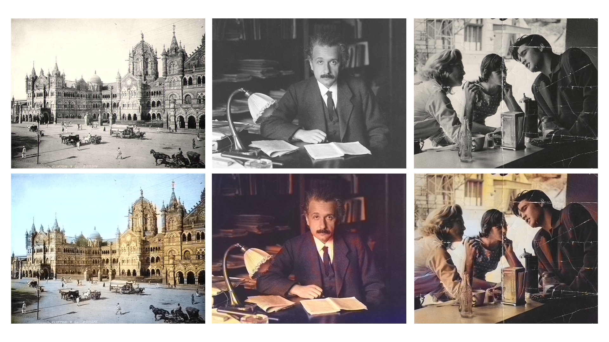
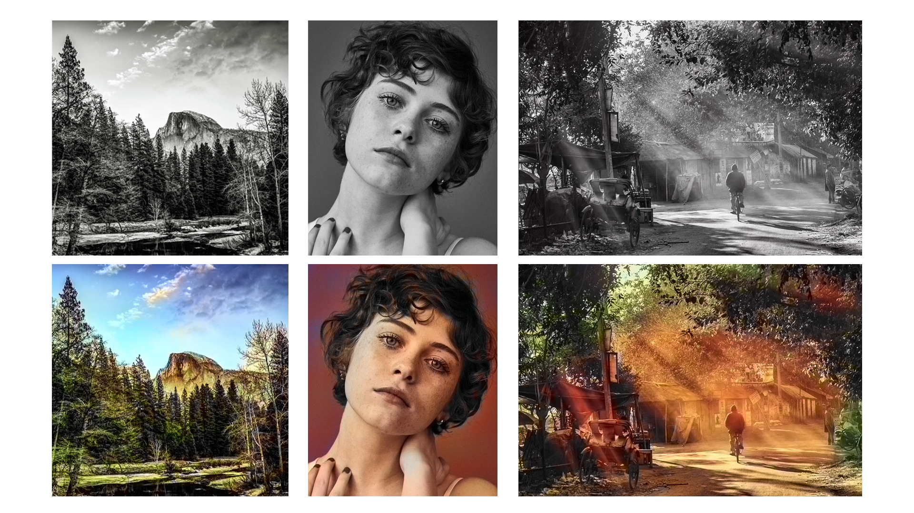
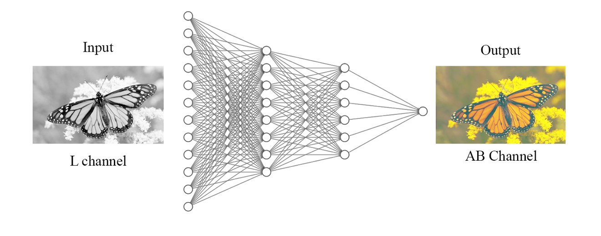

Image Colourizer
Python, OpenCV, Machine LearningAbout The Project
This black and white to color image converter takes a grayscale or black and white image as input and transforms it into a color image. This project leverages advanced image processing techniques and machine learning algorithms to add color information to monochrome images, providing a visually appealing and enhanced viewing experience. The converter analyzes the grayscale values and texture patterns in the original image to infer and assign appropriate colors to different regions and objects. It takes into account various factors such as contrast, texture, and context to make intelligent colorization decisions. This process can be fully automated or involve user interaction, allowing for customization and fine-tuning of the colorization results. Black and white to color image converters find applications in various fields such as historical image restoration, art preservation, entertainment industry, and enhancing visual content. They enable the revival and reinterpretation of old photographs and artworks by adding color, depth, and vibrancy. Additionally, these converters can be utilized in film and video production to bring life to black and white footage or in graphic design to create visually stunning illustrations and presentations. By transforming black and white images into color, these converters bridge the gap between past and present, breathing new life into visual content and offering a fresh perspective on historical and artistic works.


How it works
I used a pre-trained model that works on the LAB Colour Format. The model was trained on over a million training images from the ImageNet Dataset. The model converted the RGB images to LAB, and learned to predict the A and B channels from the L channel.

For any black and white image the model is given as input, for each pixel, the model takes the L-value to predict the A and B values. On concatenating these L and AB Channels, We get a coloured LAB-format image, which is then converted back to RGB channel and displayed.